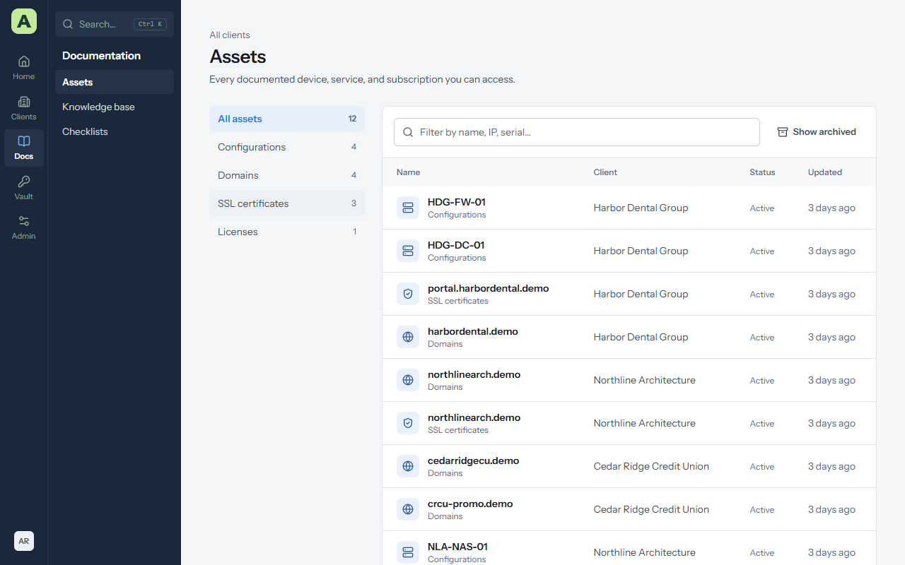
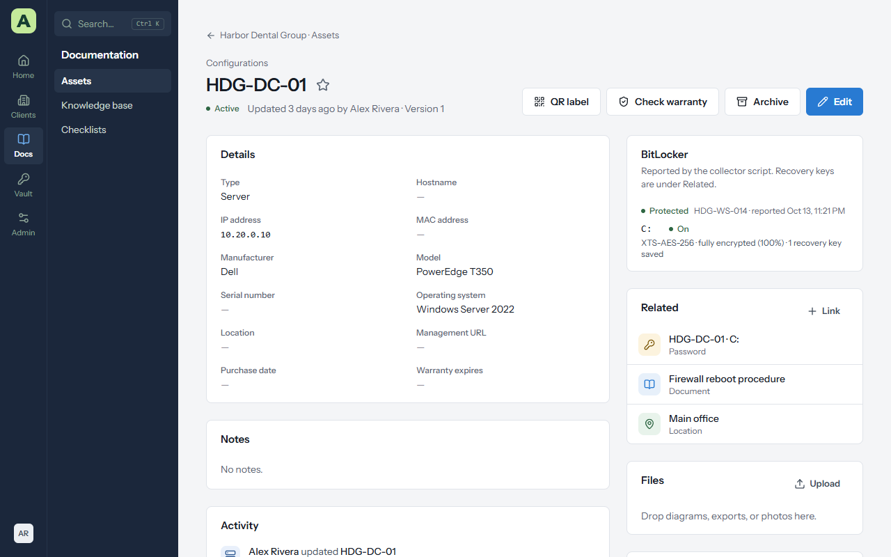
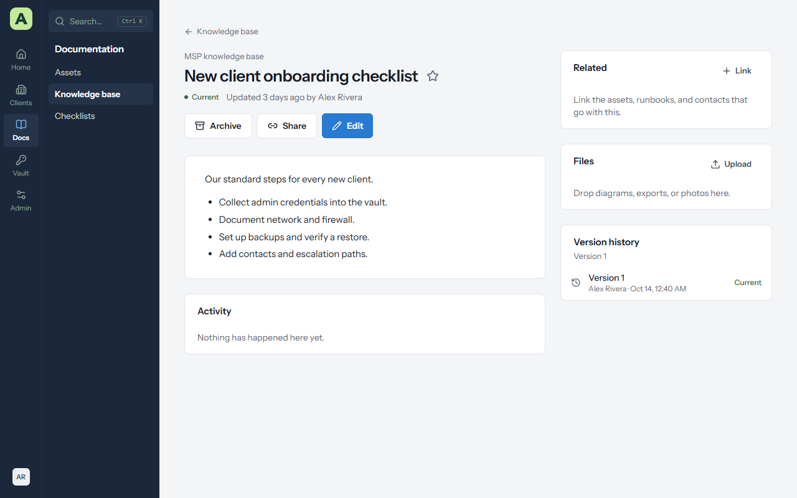
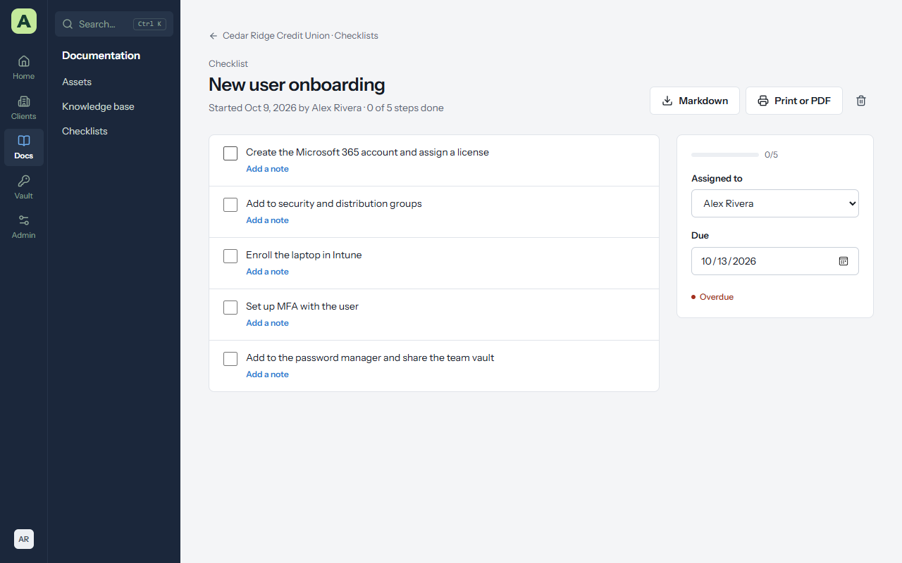

Chapter 4
Documentation
Documentation is what Atlas is for: every device, procedure and fact a technician needs, kept where the next person will find it. This chapter covers assets, documents, the knowledge base and checklists, and the features they share.
Assets
An asset is anything you look after: a server, a workstation, a firewall, a switch, a domain name, an SSL certificate, a software licence. Each asset uses a layout that decides its fields. Atlas comes with layouts such as Configurations, Endpoints, Networks, Domains, SSL certificates and Licenses, and administrators can add their own.


Docs → Assets lists assets across every client you can see. A client's Assets tab lists just theirs, grouped by layout.
Add an asset
- Open the client and go to its Assets tab, then choose Add asset.
- Pick the layout.
- Fill in the fields. Atlas checks them as you save: an IP address, date, email address or web address in the wrong format is pointed out before anything is saved.
- Choose Save.
Devices from ConnectWise RMM and tenants from Microsoft 365 arrive as assets on their own; you don't need to add them by hand. Fields filled by a sync are kept up to date by the sync, and fields you add yourself are left alone.
An asset's page


An asset's page shows its Details (every field in its layout), Notes and Activity. Down the right are:
- BitLocker, for Windows machines that report through the BitLocker collector or ConnectWise RMM. See Passwords.
- Related, the passwords, documents, contacts and locations linked to it.
- Files, anything attached.
- Version history, every saved version.
The buttons at the top are QR label, Check warranty (for hardware with a serial number), Archive and Edit.
Archive instead of deleting
Archive takes an asset out of lists and counts without losing it. Show archived on the assets list shows them, and Restore on an archived asset brings it back. Assets that a ConnectWise RMM sync no longer finds are archived for you.
Warranty dates
For Dell, Lenovo and HP hardware with a serial number, Atlas looks up the warranty end date from the vendor's public warranty check when the asset is saved, and during each ConnectWise RMM sync. Check warranty looks it up again now. A date someone typed in is never replaced.
QR labels
Choose QR label on an asset, or QR labels on a client's Assets tab for everything shown. Pick a label size and print. Scanning a label with a phone opens that asset in Atlas after signing in. The label itself shows only the name, the client and the serial number, so nothing sensitive is printed.
Documents
Documents are runbooks, procedures, how-tos and notes. They live in a client's Documents tab, or in the MSP Knowledge base for procedures that apply to every client.


Write a document
- Choose New document, on a client's Documents tab or in Docs → Knowledge base.
- Give it a Title, and choose a Folder if you use them.
- Write it. The editor has headings, bulleted and numbered lists, checklists, tables, code blocks and links.
- Set its Status: Current, Needs review or Draft.
- Optionally set Review by. Atlas reminds you on the Expirations page when the date comes, so procedures don't quietly go out of date.
- Choose Save.
The knowledge base
Docs → Knowledge base is your team's own library: procedures, standards and how-tos that aren't about one client. Client accounts never see it. New folder keeps it organized.
Template library offers ready-made runbooks to start from. They go into a Runbooks folder, and you edit them like any other document.
Share a document with a link
Share on a document makes a link anyone can open without signing in, for a how-to you want to send to a client's staff.
- They see that one document, always as it is now, and nothing else in Atlas.
- Choose how long the link works. Atlas shows how often it has been opened.
- Revoke stops the link working at once.
Checklists
Checklists are procedures you work through step by step: onboarding a new user, decommissioning a laptop, patching a server. A checklist is the reusable template; a run is one time you work through it for a client.


Make a checklist
- Go to Docs → Checklists and choose New checklist, or Template library to start from one of 13 ready-made checklists (client and user onboarding and offboarding, endpoint setup and decommission, server patching, backup verification, Microsoft 365 setup, firewall change, password rotation, incident response, SSL and domain renewal).
- Give it a Title and choose Add a step for each step.
- Make it available to every client, or to one.
Steps are copied into each run when it starts, so changing a checklist later doesn't change work already under way.
Run a checklist for a client
- On the client's Checklists tab, choose Start a checklist.
- Pick the Checklist (or write a one-off list of Steps), and choose who to Assign to.
- Tick each step as you do it. Atlas records who ticked it and when. Add a note records what you found.
- Set a Due date if it has one. An overdue run is marked.
Markdown downloads the run as a text file, and Print or PDF gives you a printed record for the client.
Link related items
Every asset, document, password, contact and location has a Related section. Choose Link to connect it to others: the firewall to its runbook, its admin password and the site it's in. Links work both ways, so the runbook shows the firewall too, and the client's Map tab draws them all.
Files
Drag files onto the Files section of any asset or document to attach them, or choose Upload. Images that pass a content check show inline; other files download. Files are stored outside the web server's reach under random names.
Version history
Every save keeps the previous version.
- Version history lists every version with who saved it and when.
- Compare shows what changed between two versions, line by line, and Restore version puts an old one back as a new version.
- If someone else saved while you were editing, Atlas tells you instead of overwriting their work. Copy your changes, reload, and apply them again.
Asset layouts
Administrators manage layouts under Admin → Asset layouts. A layout has a name, an icon and fields. Each field has a type: Text, Long text, Number, Date, Choice, Multiple choice, Yes / no, Web address, Email, Phone, or IP address or subnet. A date field can be ticked as an Expiry date, which puts it on the Expirations page and in expiry alerts.
Duplicates
Imports and syncs sometimes create the same thing twice. Admin → Duplicates lists assets, contacts and locations with the same name in the same client, and clients with the same name. Choose the record to keep and merge the rest into it: blank fields are filled in, links and files move over, and merged assets are archived so they can be restored.